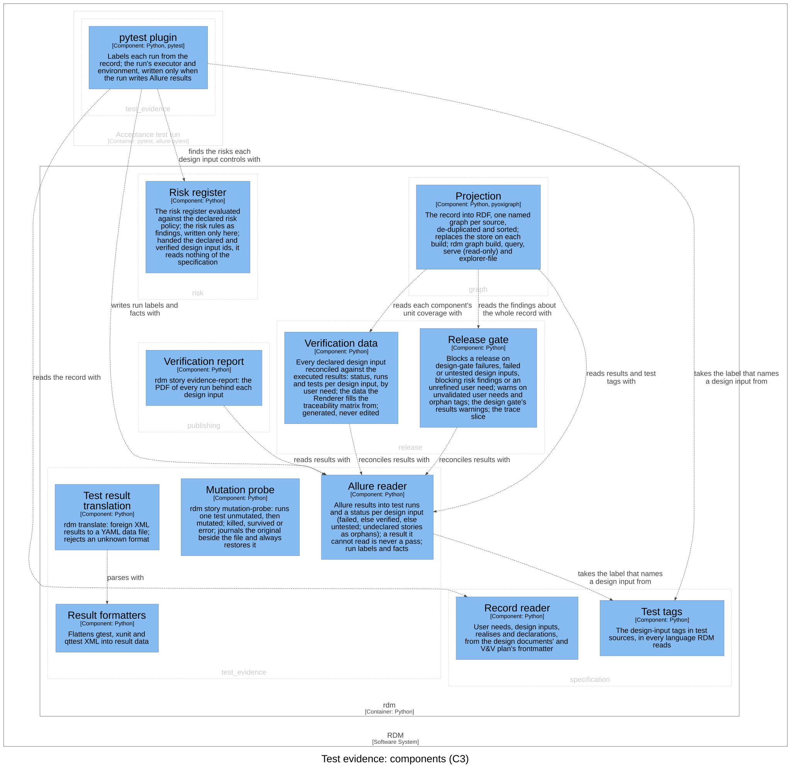

Test evidence — Software Design¶
Id: SDS-EVID-001 · Kind: design · Context: test_evidence · Realises: DI-4, DI-31, DI-40, DI-61, DI-76 · Download as PDF
Design inputs¶
- DI-17 — RDM shall translate external test-result formats (gtest/xunit/qttest XML) into RDM's result data, and reject an unknown format or a file that holds no test results.
- Traces to: UN-001
- DI-34 — RDM shall provide a mutation probe for reviewers that runs a test once unmutated — reporting an error, never a result, when it does not pass — then applies a source mutation at a site that occurs exactly once, refusing an absent or ambiguous one, runs the test again, and reports killed or survived, counting only a genuine test failure as a kill; the probe never gates a release.
- Traces to: UN-013
- DI-47 — The mutation probe shall always restore the file it mutated: it journals the original beside the file so an interrupted probe is recovered on the next probe of that file, unless the file was edited since the probe died, when the edit is kept, restores on a termination signal, and invalidates the bytecode cache on every write.
- Traces to: UN-013
- DI-72 — RDM shall read Allure results so that a result it cannot read is never counted as a pass: a file that is not JSON or not an object, not UTF-8, a symbolic link, nested too deep, with a status Allure does not write or labels that are not name and value text blocks release and is named by verify; a byte-order mark is read; a run whose step failed or broke has failed; and a run tagged with an id no design input declares is warned about.
- Traces to: UN-004, UN-003
- DI-57 — RDM shall provide a pytest plugin that, for each test tagged with a design input's story, labels the run from the record at test time — the input's user needs as Allure epics, its bounded context as the feature, links to the Markdown documents that declare it at the tested commit (its design document, the V&V plan for its user needs, and the risk document of each risk it controls), critical severity when it controls a risk — and attaches the input's text.
- Traces to: UN-004, UN-010
- DI-59 — rdm.pytest_plugin shall label each run of a test tagged with a declared design input with the commit under test, and mark the run when the working tree had uncommitted changes.
- Traces to: UN-004, UN-003
- DI-65 — rdm.pytest_plugin shall record, in the Allure results of an acceptance run, who or what ran the tests and where: Allure's executor.json naming the CI system, the run and its URL, or a local run with its user and host; and environment.properties with the operating system, the Python, pytest, allure-pytest and RDM versions, the commit under test, whether the worktree had uncommitted changes (unknown when the commit is), and the CI actor, workflow, event and runner (the user, for a local run).
- Traces to: UN-004, UN-012
Purpose¶
This context takes test results in the formats tools write them and turns them into evidence about the record's tests. Its language is the test run (one execution of a test, at one commit, by one executor), the executor (the CI job or the machine that ran it), the step (a verification step, with its own result) and the attachment (what a run kept, such as its copy of the requirement). It is a translation layer: Allure's words (result, label, epic, feature, story) and xunit's (test suite, test case) are read and written here and stop at its boundary. It labels each run of a tagged test from the record at test time, reads the results back into a status per design input, translates foreign XML results into result data, and gives the reviewer the mutation probe.
Design Outputs¶
The design outputs are this context's components in the C4 model of the architecture workspace, what each is responsible for and how they relate. They name components, never code: the workspace maps each component to its code.

| Component | Responsibility | Meets |
|---|---|---|
| pytest plugin | Labels each run of a tagged test from the record at test time; records the run's commit, worktree state (unknown when there is no commit), executor and environment | DI-57, DI-59, DI-65 |
| Unit coverage reader | The unit tests' code coverage, from one Cobertura XML or LCOV report: the lines each file ran of those measured; a report it cannot read is an error. Never acceptance evidence. | realises DI-76 |
| Allure reader | The labels and run facts in Allure's terms, written for the plugin and read back as test runs; a status per design input | DI-72, DI-57, DI-59, DI-65; realises DI-4 |
| Mutation probe | Runs one test unmutated, then with one line mutated, reports killed or survived, and always restores the file | DI-34, DI-47 |
| Test result translation | Translates a foreign XML result file into result data; refuses an unknown format | DI-17 |
| Result formatters | Flattens gtest, xunit and qttest XML into one result per test | DI-17 |
pytest plugin. It runs inside the acceptance test run, not in rdm.
It acts only on a test whose story tag is a design input the record
declares; a tag that names no declared input gets nothing. For such a test
it labels the run with what the record says at that moment: the input's
user needs, its bounded context, links to the documents that declare it
pinned to the tested commit (given only when the repository has a web
remote and there is a commit), critical severity when a risk controls it,
a copy of the input's text, and the commit and worktree state. It records
the executor and environment once per session, and only when the run
writes Allure results; a CI run is named with its run and URL, a local run
with its user and host.
Allure reader. It holds the one vocabulary of labels and result files that the plugin writes and every reader reads back, so the tools' words stop here. It reads each result as a test run (its name, result, the design inputs it names, and the outputs it labels) and matches a run to the test it came from. A run whose step failed or broke failed, whatever its own status says. A result it cannot read is named, never skipped: not JSON, nested too deep, a symbolic link, a status Allure does not write, or labels that are not a list of name and value text. Any of these could hold a failed run. Its reconciliation gives each declared design input failed when any of its runs failed or broke, else verified when any passed, else untested; a story that names no declared input is an orphan. What a test claims to verify (its tags) is the specification's; this reader handles only what a run did.
Mutation probe. A reviewer runs it (rdm story mutation-probe) to see
whether one test catches a deliberate break; it never gates a release. It
refuses a mutation site that does not occur exactly once, and refuses to
mutate when the unmutated test does not pass. Only a genuine test failure
is a kill; a run that errors or matches no test is an error, never a
kill. The restore is defended in depth: the original is journaled beside
the file before the mutation, so a probe killed outright is recovered on
the next probe of that file; a termination signal unwinds through the
restore; and every write makes the file look newer to Python's bytecode
cache, so a same-size mutant is never served stale. The file is restored to
its exact bytes, line endings included, and a leftover journal is restored
only while the file still holds that probe's mutant: an edit made since is
kept.
Test result translation (rdm translate) chooses a format, or detects
it, and writes each test's name, result and failure message as result
data; the gtest flattener also reads xunit, keying each test by its class
name, so tests of one name in different modules stay apart. A test that
failed or errored is a fail, with its failure's message or else its text;
one skipped or disabled a skip, and only the rest a pass; a qttest function
fails when any of its incidents does, and is a skip when it was skipped
with a message (Qt5) or an incident (Qt6). A file with no test results, or
whose results flatten to no test, is refused, and every refusal is a
message, exit 2. The data feeds document
templates; nothing reconciles it against design inputs.
The relationships that matter, in the direction of the arrow: the pytest plugin reads the record with the record reader, finds the risks each design input controls with the risk register and writes run labels and facts with the Allure reader. The Allure reader takes the label that names a design input from the test tags. Test result translation parses with the result formatters. The mutation probe uses nothing of RDM: it runs one test, unmutated then mutated, in the acceptance test run, as a pytest subprocess. Inward, the release gate, the verification data, the verification report and the projection read results with the Allure reader.
Realised here: the Allure reader's reconciliation is this context's part
of DI-4 (owned by release), which builds the verification data on
it. The labels and run facts written here are read back for DI-60 (graph)
and DI-64 (verification report). No other context realises part of this
context's inputs.
Assumption: the acceptance suite enables the plugin, either as a pytest plugin or through its configuration; a run without it is unlabelled and counts for no design input.
Commands and events¶
Each row: the actor issues the command, resulting in its success event or a fail event (the rule broken, after the slash), which affects the entity.
| Actor | Command | Success event | Fail events | Entity |
|---|---|---|---|---|
| Reviewer | Probe mutation | Mutant Killed | Mutant Survived · Probe Refused / Baseline Failing | Tagged test |
| Contributor | Translate results | Results Translated | Not Translated / Unknown Format | Test result |
Reactions: whenever a tagged acceptance test runs, its result is labelled from the record.
Dependencies¶
Layer 3 of the dependency rule. Depends on specification (the pytest
plugin reads the design inputs and declarations; the Allure reader takes
the story label from the test tags), risk (the plugin labels each run
with the risks its design input controls) and the shared kernel, all
below it. Depended on by release (the release gate, the verification
data), publishing (the verification report) and graph (the
projection). No import breaks the rule.
Out of scope¶
Planning data (issues, pull requests, task boards) is not part of the controlled record, and RDM no longer pulls it (Design Review 11).